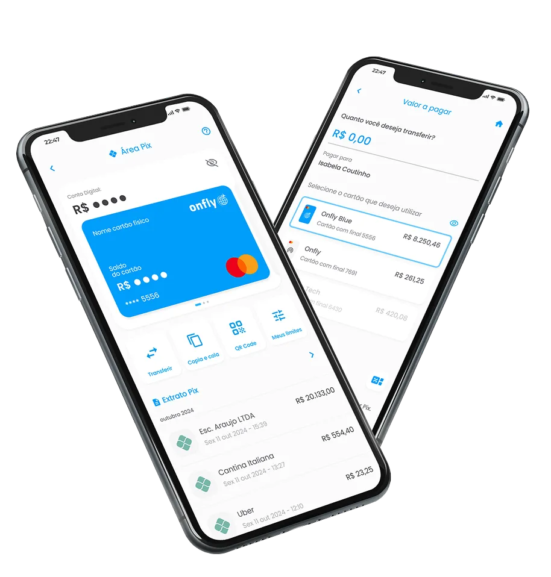
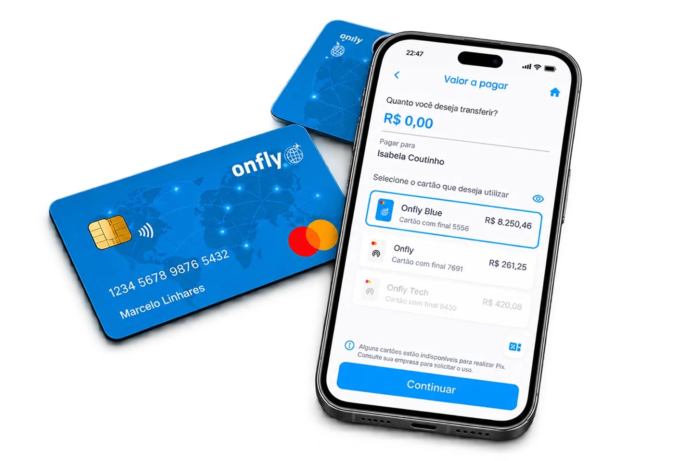
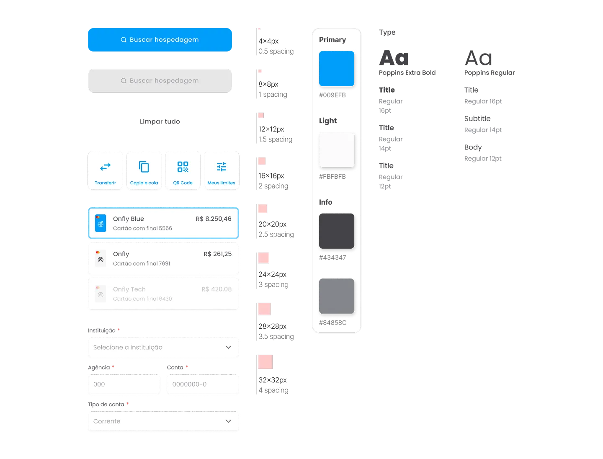
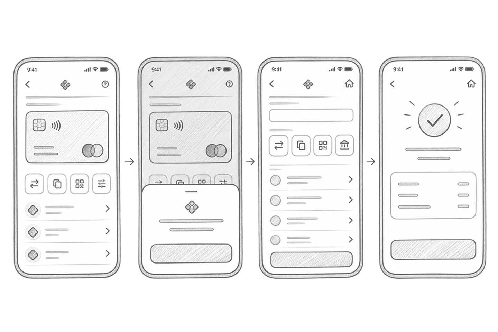
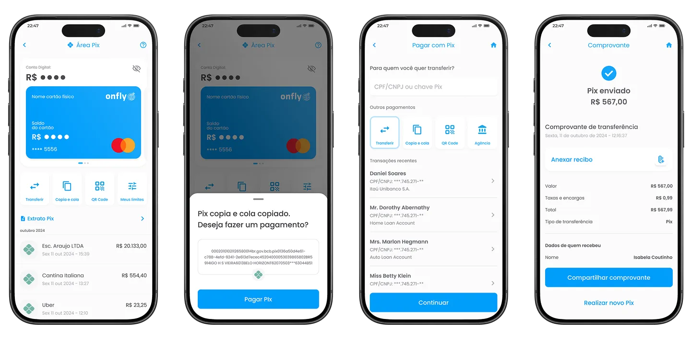
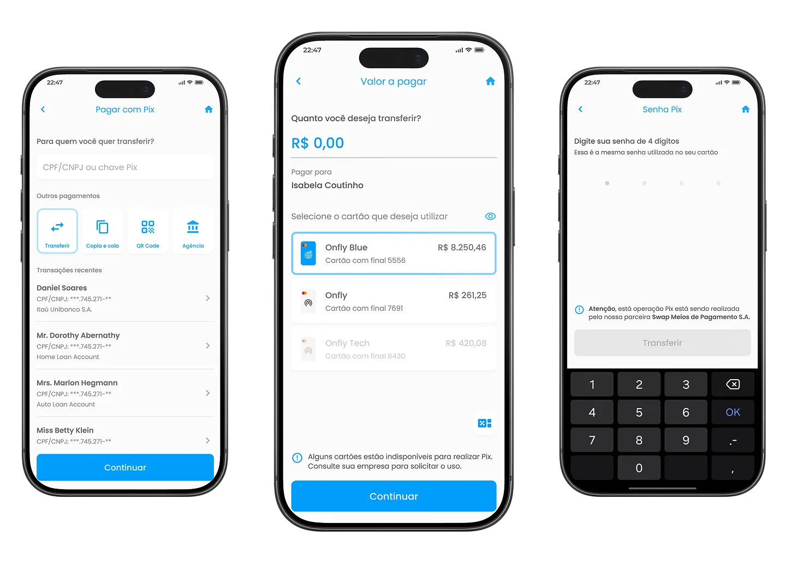
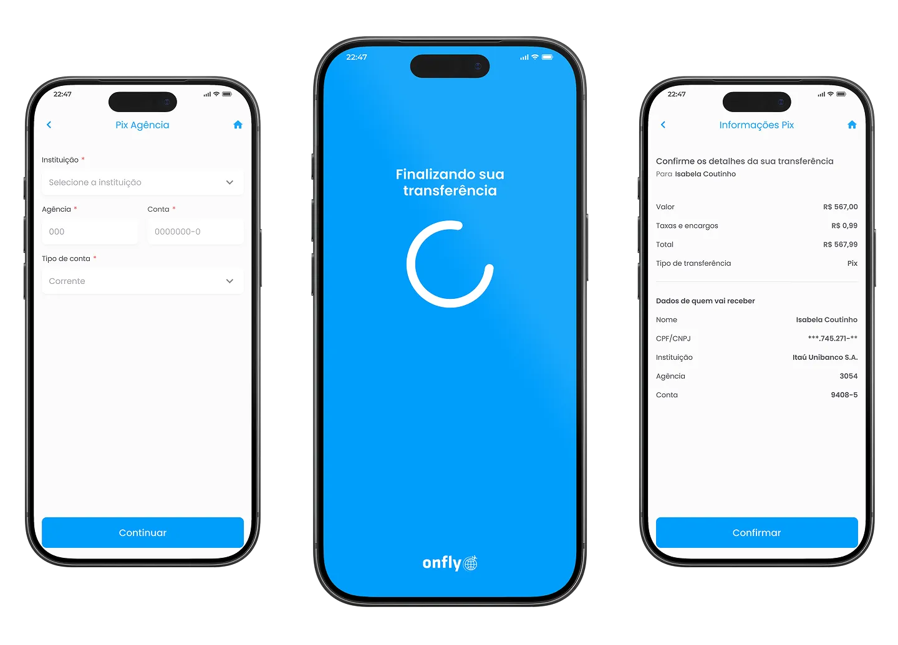

Pix Corporativo
na Onfly:
Como um problema de confiança virou
R$ 10 milhões em menos de seis meses

Uma promessa que não se cumpria
A Onfly nasceu para eliminar o reembolso da vida do viajante corporativo. O colaborador usa o cartão da empresa, ninguém tira dinheiro do próprio bolso e a gestão de despesas acontece sem planilha. O cartão pré-pago, físico e virtual, era a base dessa promessa.
Essa base tinha uma falha. O colaborador não conseguia pagar o que o cartão não alcançava: um táxi, um estacionamento, um pequeno fornecedor sem maquininha. Para as empresas, o problema se agravou quando o saque por cartão foi inicialmente interrompido e, depois, teve o valor e a frequência reduzidos por CNPJ. Na prática, isso inviabilizava o uso do recurso da empresa por vários usuários. As pessoas voltavam a usar dinheiro próprio, e a empresa voltava às planilhas e aos reembolsos.
Foi nesse cenário que a pressão veio das empresas que atendíamos. Clientes estratégicos começaram a sinalizar que poderiam sair. O problema não era técnico: era de confiança. A Onfly tinha prometido eliminar o reembolso e, naquele momento, não entregava isso em todos os casos de uso.
O comportamento mostrou o caminho
Antes de propor uma solução, precisávamos entender o problema. Nas sessões de discovery com Produto e Sucesso do Cliente, um padrão apareceu com frequência: vários colaboradores já pagavam despesas corporativas via Pix usando contas pessoais e depois pediam reembolso. Ninguém tinha pedido isso à Onfly. As pessoas tinham encontrado uma solução improvisada que funcionava.
Essa descoberta foi importante porque mudou a pergunta. Em vez de "como fazemos Pix?", a pergunta passou a ser "por que as pessoas resolviam isso fora do produto?". A resposta mostrou que faltava uma forma de usar o saldo corporativo com a mesma rastreabilidade de qualquer outra despesa.
A proposta foi validada com stakeholders, clientes e engenharia em poucos dias e virou prioridade, com prazo total de menos de 90 dias.
Pix corporativo não é Pix pessoal
Antes de desenhar qualquer tela, era preciso entender a diferença entre os dois produtos. O Pix pessoal é pensado para a pessoa movimentar o próprio dinheiro.
O Pix corporativo acontece dentro de uma empresa cliente da Onfly: mesmo quando o colaborador é quem paga, o dinheiro pertence à empresa, e a operação é de saída (cash-out). Não existe recebimento na conta.
Essa diferença muda o que o usuário precisa ver, o que precisa confirmar e como a despesa precisa ser rastreada.

O risco de canibalizar o cartão
Com o Pix, havia um risco estratégico que precisava ser discutido de frente. O cartão corporativo era o produto da Onfly que mais estava em foco, e a preocupação inicial era que o Pix canibalizasse o cartão e desviasse a atenção do que já funcionava.
Essa preocupação foi debatida com o time. Ao refletir sobre as duas soluções, concluímos que o risco valia a pena, porque os produtos resolvem necessidades diferentes. O cartão cobre compras com maquininha e gastos recorrentes, enquanto o Pix cobre o pagamento imediato, sem maquininha e sem adquirente.
O desafio de design: sem sistema e com normas
O app da Onfly era novo. Não havia biblioteca de componentes nem design system consolidado, e cada tela era uma decisão do zero.
Minha primeira decisão foi não esperar um design system para começar. Mapeei a linguagem visual da marca a partir do site, das comunicações e do produto web e montei uma micro base no Figma, com tipografia, cores, espaçamentos e componentes mínimos. A prioridade foi ter poucos componentes bem definidos, em vez de muitos improvisados.
Sobre essa base, desenhei os componentes específicos do Pix: leitura de QR Code, inputs para cada tipo de chave (CPF, CNPJ, telefone, e-mail e chave aleatória), fluxo de confirmação, validação por PIN, tela de limites e comprovante.
Esse trabalho aconteceu dentro de normas pré-estabelecidas pelo Banco Central e de um prazo curto. Ou seja, as regras não eram um item da lista de requisitos a ser cumprido no fim: elas faziam parte do material de design desde o início.

Decisões centrais
Algumas decisões definiram o fluxo. Cada uma tinha um motivo de negócio, uma restrição e um custo.
Autenticação em todo pagamento. O Banco Central exige que o Pix seja autenticado, e a Onfly adotou o PIN em todos os pagamentos, sem exceção de valor. A pressão de conversão era real, porque cada passo a mais reduz a taxa de conclusão. Mesmo assim, o PIN protege dois riscos específicos da operação corporativa: o uso indevido do saldo da empresa por alguém que pegou o celular e a pressão externa sobre o colaborador. O desafio de design foi tornar a confirmação compreensível, para que o usuário a entendesse como proteção, e não como burocracia.
Comprovante fiscal adiado. A decisão inicial foi não exigir o anexo do comprovante fiscal no momento do Pix. Ainda não estava claro como as empresas usariam esse comprovante, e exigi-lo no primeiro lançamento criaria atrito justamente no caso de uso que motivou o projeto. Para um primeiro momento, validar o uso básico era mais importante do que fechar toda a conciliação. Meses depois, a partir do uso real, o anexo entrou no próprio fluxo do Pix: o usuário anexa o comprovante uma vez, na hora do pagamento, e ele segue junto com a transação para o relatório.
Pix somente no mobile. A versão web foi considerada e descartada nessa fase. O público principal eram colaboradores em campo, visitando clientes e fornecedores no interior, onde o pagamento sem cartão faz diferença de verdade. Uma versão web aumentaria o escopo sem resolver o problema central, que estava no momento da despesa e no celular.

Estados de erro
Os estados de erro foram mapeados no planejamento, a partir das diretrizes do Banco Central para o Pix. Eles incluem saldo insuficiente, conta do recebedor indisponível ou inexistente, falha técnica, tempo esgotado e pagamento em processamento. A regra de design foi a mesma em todos: dizer o que aconteceu, por que aconteceu e qual é o próximo passo.
Validação
A validação aconteceu etapa por etapa, principalmente entre design, produto e engenharia, e usou diferentes formatos:
- Dogfooding: uso do próprio produto pelo time no dia a dia.
- Teste de guerrilha interno: testes rápidos com colegas de outras áreas, para observar a primeira reação ao fluxo.
- Validação cruzada: colegas testando fluxos que não tinham acompanhado de perto.
- Dry run: simulação completa da jornada, incluindo cenários de erro, antes do lançamento.
- Primeira fila: uso por um grupo selecionado de usuários reais antes da abertura geral.
Os resultados de cada etapa orientaram ajustes antes de avançar. Após o lançamento, não tivemos nenhum retorno negativo sobre a experiência.
Usabilidade. Utilizamos tudo o que o Banco Central pediu para a criação da experiência. Houve grande preocupação com a hierarquia de informações e com a construção do fluxo, para que os usuários tivessem uma experiência fluida e intuitiva.

Colaboração e negociação de prazo
Fui o único designer do projeto e responsável por todas as decisões de design. Trabalhei em contato constante com o PM e os responsáveis pela engenharia: conversamos, debatemos o escopo e o que estava sendo construído, e acompanhei o desenvolvimento validando a implementação. A colaboração deles sobre o fluxo e o design foi menor, já que essa responsabilidade ficou comigo.
O maior ponto de tensão foi com o Head de Produto, que propôs um prazo curto demais. Após conversarmos, consegui ampliar o prazo de design de uma para quatro semanas. O design ficou pronto em duas semanas e meia, o que também deu mais tempo para a engenharia. O tempo restante foi usado para validar e testar o projeto, além de apoiar a tecnologia no acompanhamento do desenvolvimento.
Resultados
O contexto importa para entender o resultado. Parte dos clientes já sinalizava que poderia sair da Onfly por causa desse problema, e o Pix precisava responder a essa ameaça. O objetivo não era só lançar uma funcionalidade, mas evitar que empresas que tinham acreditado no produto saíssem por causa de uma falha que ele ainda tinha.
O resultado dessa aposta aparece no próprio cartão. Em 2024, o volume de transações do cartão corporativo cresceu 285% em relação a 2023, em um ano em que cartão, Pix e app evoluíram juntos. Os números apurados internamente mostram que o Pix não tirou espaço do cartão: os dois cresceram.
Essas empresas permaneceram na base, mesmo com a insegurança sobre o novo fluxo. Elas perceberam que o problema estava sendo levado a sério, e isso sustentou a confiança durante o desenvolvimento.
O piloto começou em fevereiro de 2024. Em menos de seis meses desde o início dos testes, o Pix já tinha:
- Mais de 20 mil pagamentos realizados pelo app.
- R$ 10 milhões transacionados.
- Adoção acima de 80% entre os clientes com módulo de despesas.
O ticket médio fica em torno de R$ 500, o que faz sentido para despesas de viagem, táxi, estacionamento e pequeno comércio. É um valor bem menor do que o Pix B2B em geral, porque o caso de uso aqui é o gasto do dia a dia, e não o pagamento de fornecedores.
Os acessos ao app cresceram 63% em outubro de 2024 em relação ao início do ano, e a entrada de novos usuários aumentou 58%. O Pix não foi a única causa, mas foi um dos principais motores de uma mudança de percepção: a Onfly deixou de ser vista apenas como ferramenta de viagens e passou a ser percebida como plataforma de pagamentos corporativos.

O que aprendi
Uma solução de confiança depende de entregar a promessa do produto. A Onfly não perdia clientes por falta de funcionalidade, mas porque o colaborador não conseguia cumprir o que o produto prometia. Entender essa dor, e não só a lista de requisitos, definiu o que construir e o que deixar de fora.
Normas e prazo curto são material de design. Trabalhar com regras do Banco Central e uma base de componentes em construção exigiu decidir cedo o que era obrigatório, o que era recomendado e o que podia esperar. Isso não é uma restrição a ser contornada: é o que organiza o fluxo.
Prazo se negocia com proposta, não com recusa. Quando o Head de Produto propôs um prazo inviável, levei o que seria entregue em cada cenário e o que dependia de mais tempo. A conversa resultou em quatro semanas, e o design terminou antes disso, o que liberou tempo para validação e para a engenharia.
Adiar tem custo, e precisa ser decidido com dado. Adiar o comprovante protegeu o lançamento, mas fez com que essa parte do fluxo chegasse meses depois, depois que o uso real mostrasse a forma correta. A lição é que um adiamento só se justifica quando há um motivo claro para ele e um momento definido para retomar.
